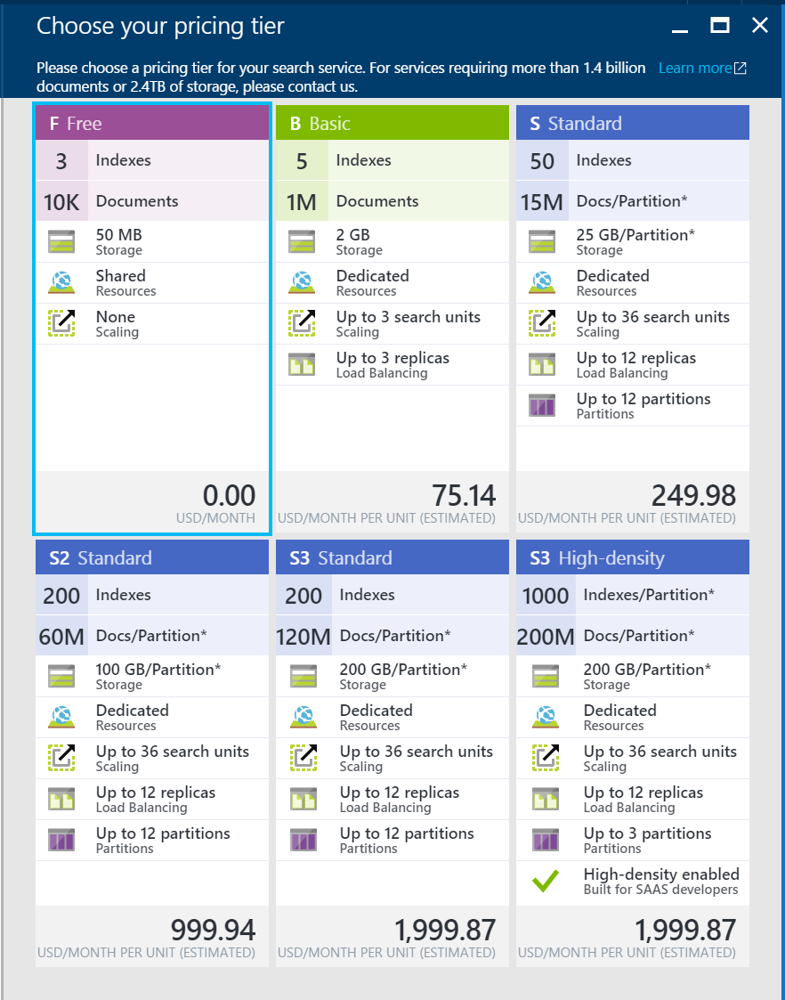
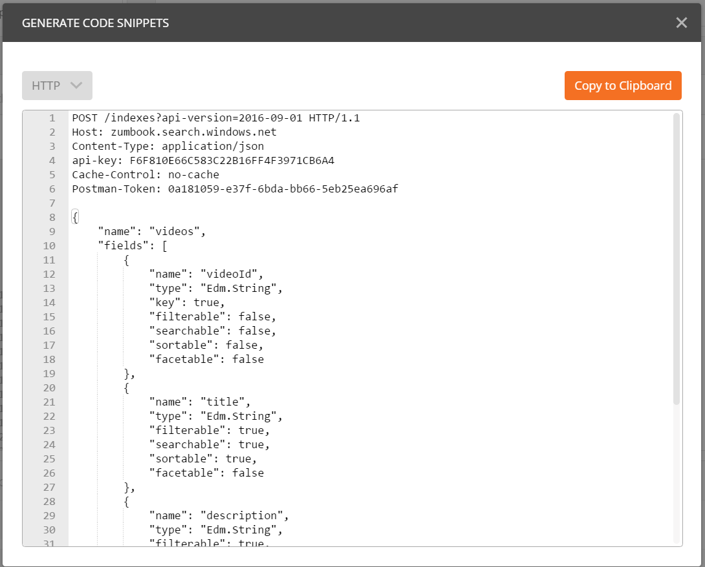
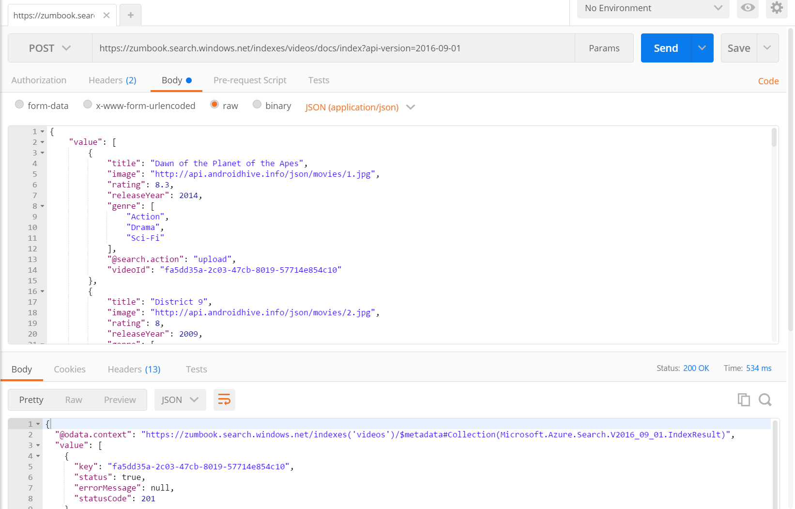
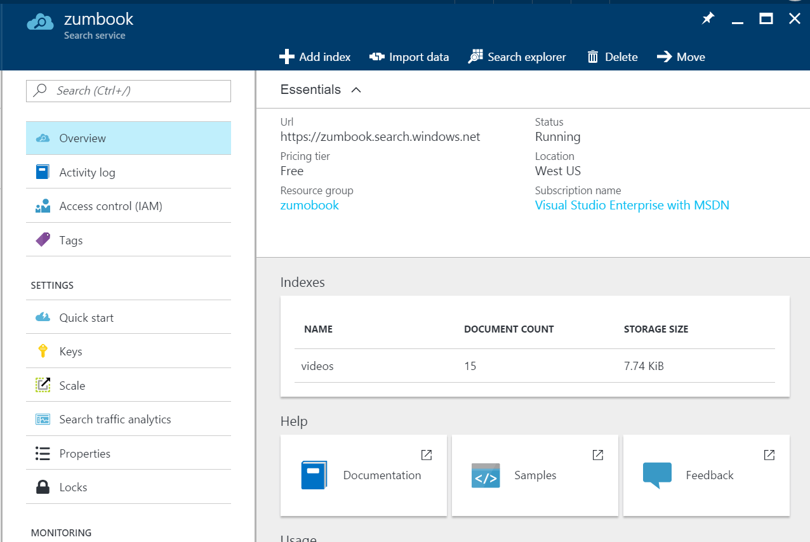
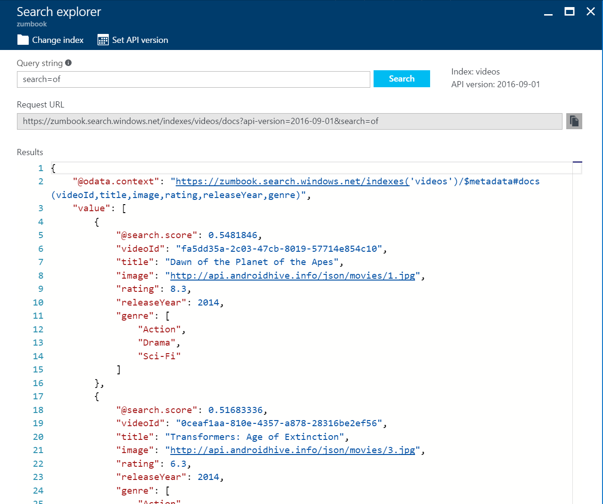
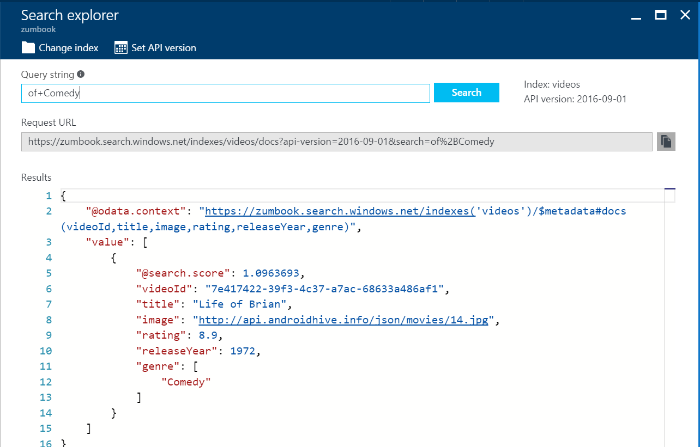

Integrating Mobile Search¶
Simple search capabilities can be handled by a little light LINQ usage and a small search bar. However, most catalog apps or video apps have search that seems almost magical in what it produces. It can handle multiple languages, bad spelling, the difference between singular and plural spellings. Once it has a set of matches, the order of the results is based on relevance to your search query and the app can highlight and provide additional search queries.
All of this is provided by external search services. The most commonly used services are based on Lucene which is an open-source text search engine library from the Apache Project. Azure Search is no exception here. It provides a nice REST interface that can be used by your app to provide search results.
In this chapters example, we are going to build something new and it doesn't use Azure Mobile Apps much at all. We are going to build a video search engine. We will have a number of videos that we will upload. Those videos will be processed by the backend and the audio and video content will be analyzed for searchable content. Our app will be able to search that content and get some matches back.
To start, I've created a simple Xamarin Forms app with a single view (called Search). We'll update this app later on as we develop the code. For now, the code for the app is on the GitHub repository.
Configuring Azure Search¶
My project does not depend on Azure Mobile Apps this time (yet). Create a new Resource Group, then click on the + ADD button at the top of your resource group and add a new Azure Search resource. You will have to give it a name which becomes a part of the URL. All Azure Search resources are accessed through a https://name.search.windows.net URL.
Tip
Since your users will not be typing the name in, this is a great time to use a GUID as the name - it fits the naming convention and is guaranteed to be unique.
The only other decision of note is the Pricing Tier. You will be given the Standard tier, which covers 15 million documents per partition and up to 12 partitions, with up to 36 search units for scaling. It's an awesome production service. We are not exactly at that level of need yet. Fortunately, there is a free tier that covers a single scale unit, 50MB of storage and 10,000 documents - plenty for testing the service out.

Click on the F Free option, then Select, followed by Create to create the resource. Creation of search resources is very quick - usually less than 15 seconds.
Creating a Search Index¶
Just like Azure Mobile Apps, there is no data in the service yet, so it's fairly useless. We need to create an index that can be searched. For right now, I've got a collection of videos. These documents are JSON objects that include the following fields:
- Id
- Title
- Image
- Rating
- Release Year
- Genre
In Azure Search, the model for the objects going into the store need to have a type and you need to decide on some attributes. Exactly one field must be a "key" (we'll use the Id for this), and fields need to be marked Retrievable, Filterable, Sortable, Facetable and/or Searchable.
- Retrievable - the app can retrieve the field
- Sortable - it can be used to sort search results
- Filterable - it can be used in filter queries
- Searchable - it is a full-text search field
The only one I've left out here is "Facet-able". This allows a field to be used in faceted navigation. This is a drill-down mechanism. If you have been on a web store like Amazon, you will have seen this feature. It's generally depicted as a "Refine by" field. For example, you may search for cars, but then want to limit the search to only convertibles, then only by red cars. Each of these refinements is a facet. If I added a "genre" to my fields, I could use faceted navigation.
Back to my model, here it is:
| Field Name | Type | Attributes |
|---|---|---|
| videoId | Edm.String | Key, Retrievable |
| title | Edm.String | Retrievable, Sortable, Filterable, Searchable |
| image | Edm.String | Retrievable |
| rating | Edm.Double | Retrievable, Sortable, Filterable |
| releaseYear | Edm.Int32 | Retrievable, Sortable, Filterable |
| genre | Collection(Edm.String) | Retrievable, Filterable, Searchable, Facetable |
The types are based on OData v4 types. There are a large number of primitive types. Unfortunately, Azure Search only supports a subset of these.
Warn
You can't sort by the genre field because it is a collection. Collections cannot be marked sortable.
You can create an index via the Azure Portal or with the REST interface. I'm going to define my "videos" index with JSON. Here is the JSON file:
{
"name": "videos",
"fields": [
{
"name": "videoId",
"type": "Edm.String",
"key": true,
"filterable": false,
"searchable": false,
"sortable": false,
"facetable": false
},
{
"name": "title",
"type": "Edm.String",
"filterable": true,
"searchable": true,
"sortable": true,
"facetable": false
},
{
"name": "image",
"type": "Edm.String",
"filterable": false,
"searchable": false,
"sortable": false,
"facetable": false
},
{
"name": "rating",
"type": "Edm.Double",
"filterable": true,
"searchable": false,
"sortable": true,
"facetable": false
},
{
"name": "releaseYear",
"type": "Edm.Int32",
"filterable": true,
"searchable": false,
"sortable": true,
"facetable": false
},
{
"name": "genra",
"type": "Collection(Edm.String)",
"filterable": true,
"searchable": true,
"sortable": false,
"facetable": true
}
]
}
Tip
You can skip default values. Searchable and Retrievable default to true, so you only have to specify them if you want to turn that off. Similarly, key defaults to false, so you only have to specify the key on the field that needs it.
To install this index, you will need the URI of the search service (which you already have) and the API Key.
In the Azure Portal, open your Azure Search resource and click on Keys. You will see the primary
and secondary ADMIN KEY. You can use either one. Open up Postman and issue a POST to URI/indexes?api-version=2016-09-01.
Set the Content-Type to application/json and add an api-key header set to the admin key. The content
of the POST should be your JSON object.
Info
You should automate this. HTTP POSTs can be done via Node or PowerShell scripts.

Click on the SEND button and you will see the return status of 201 Created and an OData v4 document
in the response body giving the full definition of the index. You will receive a 400 series response with
an error message if something goes wrong. It's likely to be either a duplicate index or a malformed JSON
object.
Free Limits
You can create 1 free Azure Search instance and that supports 3 indices (or collections of documents).
Populating a Search Index (the easy way)¶
There are many ways of populating a search index. You can do what we are going to do - push data into an index. You can, however, also define an indexer that will crawl a data source periodically. Indexers are provided for Azure Blob and Table Storage, DocumentDB and SQL Server instances (through Azure SQL or SQL Server on a VM).
I'm going to use a file from the Internet to populate the search index. I had to adjust it as the format for uploading is specific:
{
"value": [
{
"title": "Dawn of the Planet of the Apes",
"image": "http://api.androidhive.info/json/movies/1.jpg",
"rating": 8.3,
"releaseYear": 2014,
"genre": [
"Action",
"Drama",
"Sci-Fi"
],
"@search.action": "upload",
"videoId": "98ebe557-894c-48de-b61c-718f78b2adbb"
},
{
"title": "District 9",
"image": "http://api.androidhive.info/json/movies/2.jpg",
"rating": 8,
"releaseYear": 2009,
"genre": [
"Action",
"Sci-Fi",
"Thriller"
],
"@search.action": "upload",
"videoId": "e9d89038-386b-4aaa-a36c-530e2f3587c9"
},
...
]
}
I can upload this document just like the creation of the index. The only difference is that I am POSTing to /indexes/videos/docs/index:

If you see a 200 OK, then all the documents were uploaded and accepted. If you see a 207 message, then some of the documents were not uploaded. In that case, look at the response - each document will be referenced by the key field (in our case, the videoId field), the status field will be false and there will be an errorMessage field which contains the problem. You can correct the problem and upload just that document.
There are four values for the @search.action field - normally, you will want to use "upload" for new documents and "mergeOrUpload" for subsequent updates.
Testing Azure Search¶
Now that we have a few documents indexed, we can test the search facility. Go to the Overview page of your search service. The indices are listed on the overview page and you can click on the videos index.

You can then click on the Search Explorer to get into the test facility. Let's start with a fairly basic search for the word "of" across all searchable fields:

We can also do boolean searches. For example, let's do the same search, but finding only comedies:

Azure Search can accept a simple search string (as we have done here), an OData Filter using a restricted set of search criteria, or Lucene Search Syntax. The search explorer allows you to explore the various search mechanisms and their (sometimes peculiar) syntax.